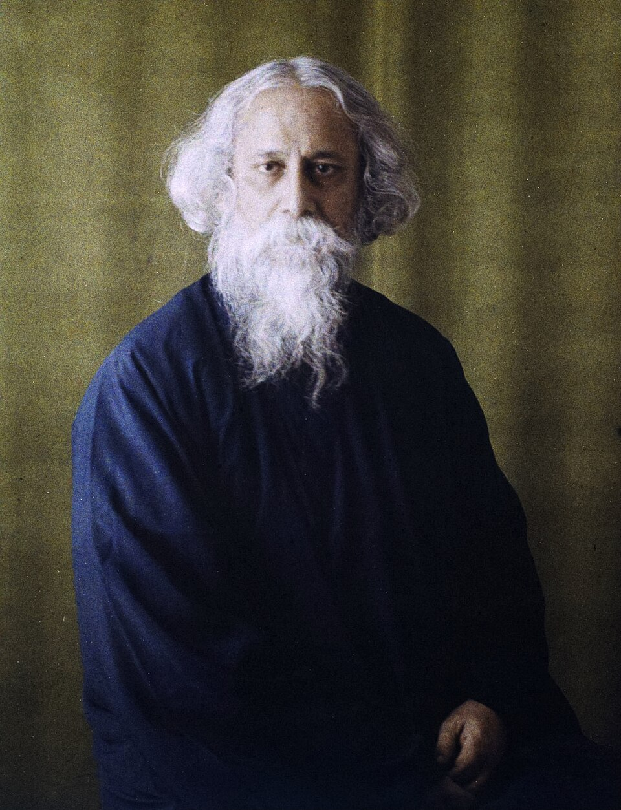

1861 – 1941 | Poet, Polymath, Philosopher, Visual Artist, and Composer

“Where the mind is without fear and the head is held high; Where knowledge is free...” — Rabindranath Tagore, Gitanjali
Rabindranath Tagore was born on May 7, 1861, in the ancestral Jorasanko mansion in Calcutta. Raised in a culturally vibrant family, he began composing verses at the tender age of eight. Rejecting rigid formal schooling, Tagore pursued independent learning, immersing himself in classical literature, music, and philosophy, which laid the foundation for his genius.
Tagore modernized Bengali art by spurning rigid classical forms and adopting colloquial phrasing. His literary repertoire spans poetic masterpieces, insightful short stories, profound novels, and socio-political essays. Beyond literature, he composed over 2,200 songs—collectively known as Rabindra Sangeet—which remain integral to the cultural identity of Bengali speaker worldwide.
In 1913, Tagore achieved global renown when he became Asia's first Nobel Laureate in Literature for his translated collection of poems, Gitanjali (Song Offerings). His international tours brought Eastern philosophical wisdom to Western audiences, fostering cross-cultural dialogues with luminaries like Albert Einstein and W.B. Yeats.
His visionary ideals culminated in Visva-Bharati University at Santiniketan, a pioneering institution emphasizing harmony between humanity and nature. Tagore holds the unique distinction of having composed the national anthems of two nations—India (Jana Gana Mana) and Bangladesh (Amar Shonar Bangla).
Traveled to England to study law at University College London, expanding his perspective on Western classical literature and music.
Established an open-air experimental school at Santiniketan focused on holistic education, later evolving into Visva-Bharati University.
Conferred the prestigious Nobel Prize for 'Gitanjali', becoming the first non-European and first Asian Nobel Laureate.
Resigned his British Knighthood in protest against the tragic Jallianwala Bagh massacre, demonstrating moral courage and patriotism.
Took up painting in his sixties, exhibiting works in Paris, London, and New York while delivering world lectures on peace and humanism.